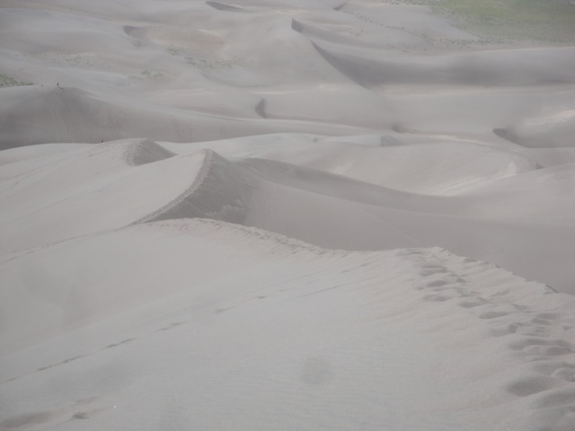

| |
Texas/Rocky Mtn Road Trip
Las Vegas/Castles'N'Coasters Six Flags Fiesta Texas Schlitterbahn
Sea World San Antonio Gavelston Pier
Six Flags Over Texas Silver Dollar City
Frontier City
Colorado
Elitch Gardens Lakeside Park Glenwood Springs
All right. We're briefly driving through Texas. And before we're gone for good, might as well take one last stop at Whataburger.
I will say this. AMARILLO IS F*CKING AWFUL!!!! I DESPISE THAT CITY DOWN TO ITS DISGUSTING ROTTEN CORE!!!!! Out of every single place I have ever traveled to in my life, Amarillo is the absolute bottom of the barrel. F*ck this town and f*ck the people who live in the asshole of America (Ok, not EVERYONE in Amarillo. Don't want to generalize. But there are certain people here who deserve to be repeatedly tazed in the balls until sterelization ensues). Its so bad that we abandoned all plans we had there and just bolted out of that city as fast as we could. I'd rather be back in Arkansas.
Thank god we're out of Amarillo. I can relax again.
New Mexico is a meh state. Nothing really wrong with the state, but there's not much here for me to get excited about. The most interesting thing I noticed is that this state actually makes their overpasses look pretty with art on them.
Sweet. The main reason we came to New Mexico.
ARE YOU F*CKING SERIOUS!!!?
What the f*ck is wrong with this region!!!? I know on Sundays, you like to close stuff because of some stupid invisible magic man in the sky (Hi Chick Fil A). I am a googolplex % against this, but I at least understand a solid reason. You have to deal to your imaginary friend. What the f*ck are you all doing on Mondays? There's no invisible friend to deal with? Are you all just masturbating? Is this Masturbatin' Monday over here so you shut your whole society down!!? I can not express enough the Hydrogen Bomb of rage I have towards policies like this (Magic Man in the Sky or Masturbating, doesn't matter. F*CK YOU!!!!) If you have this policy and your competing buisness doesn't, I'll give my buisness to the competition, regardless of what day of the week it is.
 Hey, they may lick all the taco shells here, but at least they aren't too busy masturbating to shut down.
Hey, they may lick all the taco shells here, but at least they aren't too busy masturbating to shut down.
I've had enough of this. Get me the hell out of here. Never thought I'd say this, but I wish we had just gone straight through Kansas and straight to Colorado instead of dealing with this bullsh*t.
Bye New Mexico. I'll miss your pretty overpasses.
We just crossed the state line and suddenly everything looks pretty.
Is it me or do I see a bunch of giant sand dunes in the middle of Colorado?
Nope. Turns out that there's an entire National Park here for the Colorado Sand Dunes.
These are the largest sand dunes in North America.
This should give you an idea of how big these Sand Dunes are.
All right. Lets get climbing up these 750 ft sand dunes.

It literally looks like someone just plopped a chunk of the Sahara Desert into Colorado.
 But don't worry. If you're worried about getting lost in the desert, there'll always be some green in sight to remind you that you're in Colorado.
But don't worry. If you're worried about getting lost in the desert, there'll always be some green in sight to remind you that you're in Colorado.
And of course, after having a blast rolling down the Kelso Dunes, I wasn't gonna stop at the largest sand dunes in North America without rolling down a couple hundred feet down one of these massive dunes. =)
This is definetly one of the most underrated National Parks in America. Definetly check this place out. =)
If you think I'm sandy now, you should've seen me after the Kelso Dunes. This in my shoes is NOTHING.
Onto our next destination!!!
Colorado is freaking beautiful!!! I'd dare call it the Switzerland of America (And yes, I am aware that Colorado is not break your wallet expensive like Switzerland is. I get that they're not identical smartass).
This state is so beautiful that I don't even care about traffic because of my setting.
Dammit!!! Don't tell me the Royal Gorge Bridge is closed!!!
Yep. Its closed. But its closed due to a recent wildfire. So at least it has a valid reason.
Yep. No Royal Gorge Bridge crossing today.
But even if we can't cross it and do all the cool stuff it has, its still amazing to just look at. So I'm still glad we came.
Coolest Skycoaster Location ever.
Next stop, Colorado Springs.
Something tells me that that is not stable at all.
 We are here at the Garden of the Gods, a public park in Colorado Springs cause just look at this place.
We are here at the Garden of the Gods, a public park in Colorado Springs cause just look at this place.
Is it me or does it almost looks like the mountain for Big Thunder Mtn in a way.
Ok, its not as pretty from this angle, but it still looks amazing.
Warning. Suicidal Goats may be present here.
This guy was just in the park playing Violin like a badass. We need more people like this in Ventura.
Highly recommend the Garden of the Gods to anyone travelling through Colorado Springs.
More Colorado Springs goodness.
Graffiti in Colorado Springs.
All right. We have made it from Colorado Springs and are now in Denver.
Denver is a very interesting city. I like this place.
Hi Elitch Gardens. I'll see you tomorrow.
Elitch Gardens
Home
|